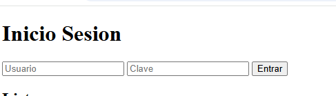
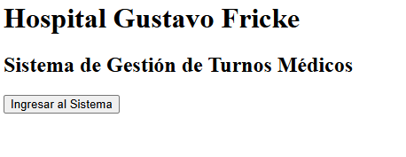

1. Sistema de gestión de estudiantes
Un programa que permita registrar estudiantes, guardar sus notas, calcular promedios y consultar información académica. Se puede desarrollar utilizando Python y Programación Orientada a Objetos.
Instituto Superior de Comercio INSUCO
La especialidad de Programación nos enseña a desarrollar soluciones tecnológicas mediante el uso de diferentes lenguajes y herramientas informáticas. Durante nuestra formación aprendemos a crear programas, diseñar páginas web, trabajar con bases de datos y desarrollar sistemas que permitan resolver problemas de la vida cotidiana.
Durante las clases hemos trabajado con Python desde sus conceptos básicos, aprendiendo a utilizar variables, condiciones, ciclos y funciones. También hemos conocido la Programación Orientada a Objetos (POO), utilizando conceptos como herencia, encapsulamiento, abstracción y polimorfismo.
Además, hemos aprendido sobre bases de datos y SQL, realizando consultas y trabajando con información. También hemos desarrollado páginas web utilizando HTML para la estructura, CSS para el diseño y JavaScript para agregar interactividad.
Un programa que permita registrar estudiantes, guardar sus notas, calcular promedios y consultar información académica. Se puede desarrollar utilizando Python y Programación Orientada a Objetos.
Crear sitios web para presentar información de instituciones, empresas o proyectos, utilizando HTML, CSS y JavaScript.
Un sistema que permita organizar las horas de atención de un hospital, registrar pacientes y administrar sus turnos mediante una base de datos.
Algunos ejemplos visuales relacionados con el desarrollo y la aplicación de la programación.


Aquì puedes ver uno de mis proyectos en github
Visitar proyecto en GitHub